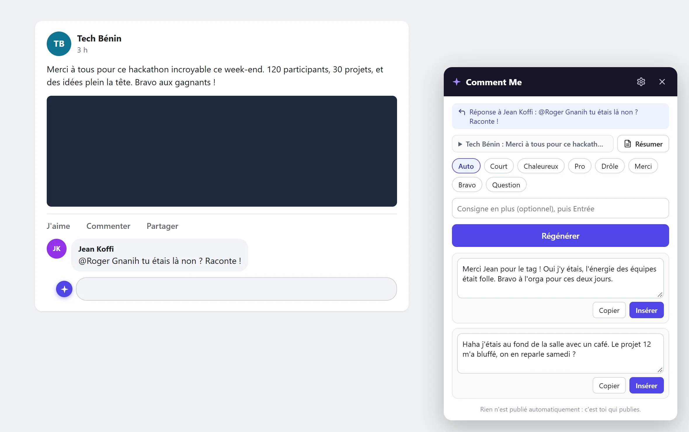
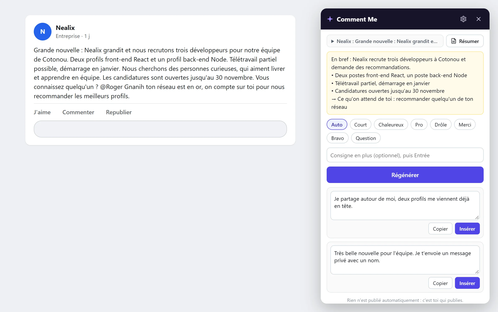
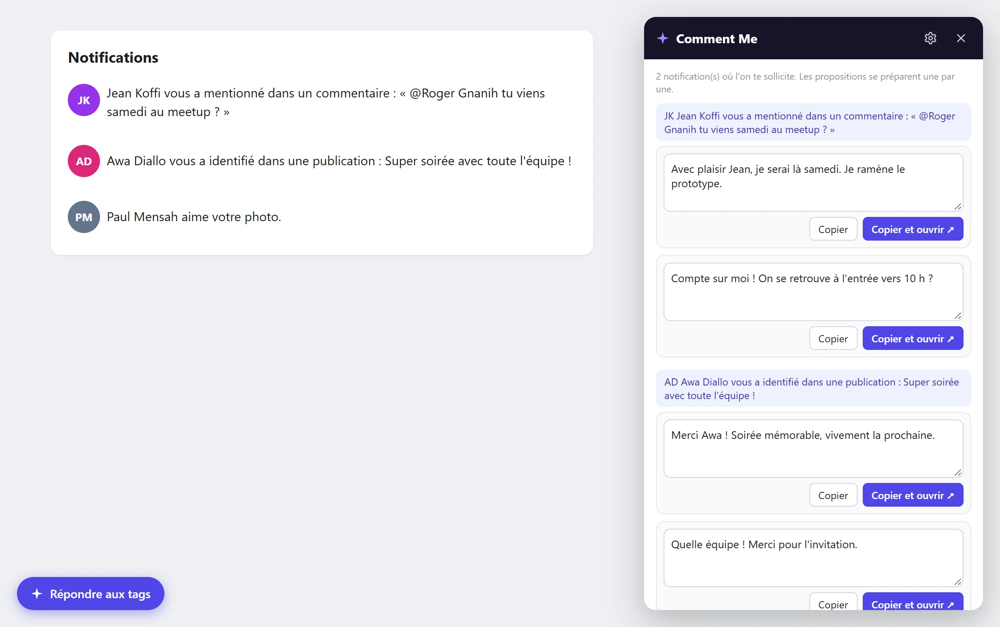

Réponds à tout le monde, dans ton style.
Comment Me est une extension de navigateur pour Facebook et LinkedIn. Elle lit la publication, la résume si besoin et te propose des commentaires qui te ressemblent. Tu choisis, tu ajustes, tu publies.

En résumé
Quand on est tagué partout, répondre à chacun prend des heures. Comment Me prépare la réponse à ta place, avec tes mots, grâce à l'IA de ton choix, gratuite si tu veux. Le dernier clic reste toujours le tien.
Fonctionnalités
Pensé pour ceux qu'on sollicite toute la journée.
Ton style, pas celui d'un robot
Donne quelques-uns de tes commentaires. L'IA reprend tes expressions, ta ponctuation et ton tutoiement, puis apprend de ce que tu publies.
Prêt avant que tu demandes
Les propositions se préparent dès que tu cliques dans la zone de commentaire. Le texte s'écrit sous tes yeux.
Répond aux tags
L'extension comprend à quel commentaire tu réponds et qui t'a mentionné.
Toutes tes notifications d'un coup
Sur ta page Notifications, un bouton prépare une réponse pour chaque mention.
Résumé en dix secondes
Une longue publication ? L'essentiel, les points clés et ce qu'on attend de toi.
Lit aussi les images
Une photo sans texte ? L'IA la regarde pour écrire un commentaire pertinent.

Comprends vite, réponds juste.
Le bouton Résumer condense une longue publication en quelques lignes et repère quand on attend quelque chose de toi.
- L'idée principale en une phrase
- Deux à quatre points clés
- Ce qu'on te demande, s'il y a lieu

Vingt tags ce matin ? Aucun problème.
Ouvre tes notifications et clique sur « Répondre aux tags ». Chaque mention reçoit une réponse prête. Copie, ouvre, publie.
- Seules les mentions et réponses sont retenues
- Préparation une par une, pour ménager ton quota
Fonctionnement
Trois clics, et ta réponse est prête.
Clique dans le commentaire
Un bouton apparaît à côté de la zone de saisie. L'IA a déjà lu la publication.
Choisis ta réponse
Plusieurs propositions : courte, chaleureuse, pro, avec humour. Modifie ce que tu veux.
Publie toi-même
« Insérer » remplit la zone de commentaire. Le bouton « Publier », c'est toi qui le cliques.
Ta propre IA
Gratuit pour commencer. Ta clé, tes règles.
Pas d'abonnement Comment Me, pas de serveur intermédiaire. Tu branches ta propre clé API, et plusieurs fournisseurs ont une offre gratuite.
Rien n'est publié sans toi
L'extension ne publie, n'aime et n'envoie jamais rien en ton nom.
Tes données restent chez toi
Clé, réglages et style restent dans ton navigateur. Aucun compte à créer.
Code ouvert
Licence MIT. Tout le monde peut lire, vérifier et améliorer le code.
Installation
Installé en deux minutes.
Chrome, Edge, Brave, Opera
- Télécharge le zip de la dernière version et décompresse-le.
- Ouvre
chrome://extensions(ouedge://,brave://,opera://). - Active le Mode développeur.
- Clique sur Charger l'extension non empaquetée et choisis le dossier.
- Colle ta clé gratuite Google AI Studio et quelques-uns de tes commentaires.
Firefox
- Télécharge et décompresse le zip.
- Ouvre
about:debugging, puis « Ce Firefox ». - Clique sur Charger un module temporaire et choisis
manifest.json.
Boutiques officiellesBientôt
Chrome Web Store, Edge Add-ons et Firefox Add-ons : installation en un clic et mises à jour automatiques.
Questions fréquentes
Tout ce que tu veux savoir.
Est-ce vraiment gratuit ?
Oui. L'extension est gratuite et open source. L'IA, elle, dépend du fournisseur choisi : Google Gemini, Groq, Mistral, OpenRouter et Ollama proposent des offres gratuites, largement suffisantes pour un usage personnel.
Est-ce que l'extension publie à ma place ?
Jamais. Elle prépare le texte et peut le placer dans la zone de commentaire. Le clic sur « Publier » reste toujours le tien.
Mon compte Facebook ou LinkedIn risque-t-il quelque chose ?
L'extension n'automatise aucune action : pas de publication, pas de « j'aime », pas de clic à ta place sur les boutons de publication. Elle se contente de lire la page que tu consultes et de t'aider à écrire, comme un correcteur ou un assistant d'écriture.
Où vont mes données ?
Tes réglages et ta clé restent dans ton navigateur. Le texte d'une publication est envoyé uniquement au fournisseur d'IA que tu as choisi, au moment où une proposition est demandée. Il n'y a aucun serveur Comment Me. Tous les détails sont dans la politique de confidentialité.
Comment l'IA apprend-elle mon style ?
Dans les réglages, colle une dizaine de tes vrais commentaires. Un bouton peut aussi décrire ton style automatiquement. Si tu le souhaites, l'extension retient ensuite les commentaires que tu publies vraiment, sur ton ordinateur uniquement.
Le bouton n'apparaît pas sur Facebook ou LinkedIn. Que faire ?
Recharge la page. Ces sites changent souvent leur code : si le bouton reste absent, sélectionne le texte de la publication puis fais un clic droit, « Proposer un commentaire ». Signale-nous le problème pour qu'on le corrige.
Pourquoi passer par le mode développeur ?
Les navigateurs n'installent en un clic que les extensions publiées dans leur boutique. La publication sur le Chrome Web Store, Edge Add-ons et Firefox Add-ons est en préparation. D'ici là, le mode développeur permet d'installer la version officielle téléchargée sur GitHub.
Contact
Une question, un bug, une idée ?
Le projet vit sur GitHub. Écris-nous, on répond.